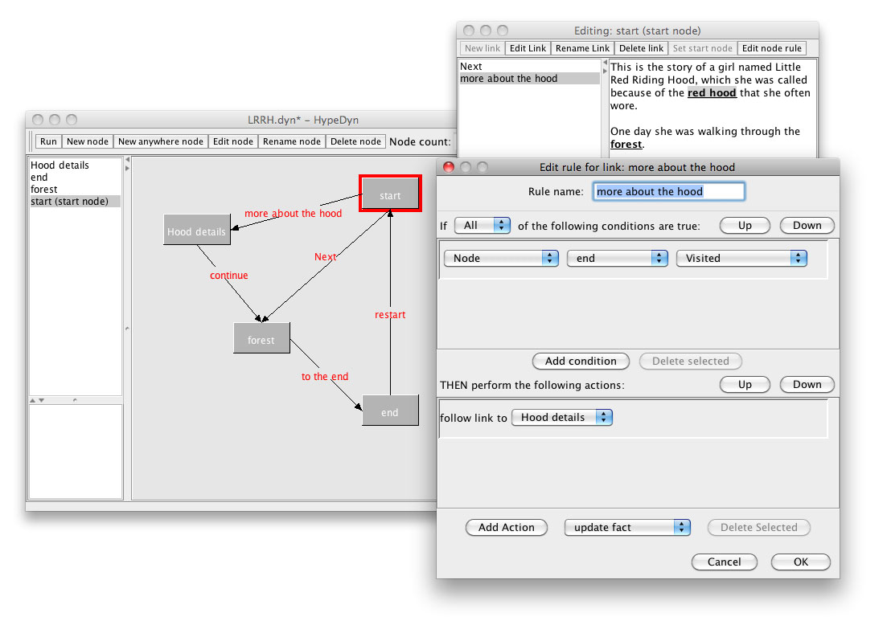

Overview
HypeDyn (pronounced "hyped in") is a procedural hypertext fiction authoring tool for people who want to create text-based interactive stories that adapt to reader choice. It is designed to allow non-programmers to create complex procedural behaviours within a hypertext-like authoring environment.

This document provides an overview of the HypeDyn authoring tool. For a step-by-step introduction to writing stories in HypeDyn, please see the tutorials and video on the HypeDyn website. The tutorials and example files are also included in the HypeDyn installation.